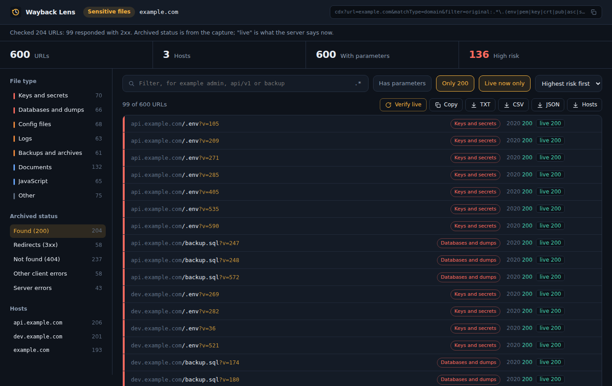
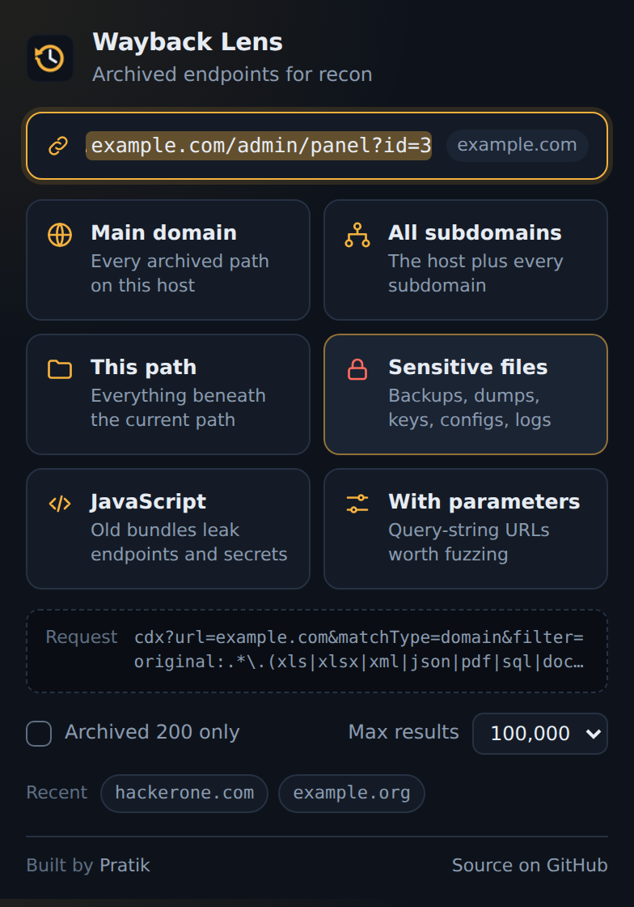

Pick a target, choose a scan, and get archived endpoints, subdomains, JavaScript and leaked files in a workspace you can filter, verify and export. Not a wall of raw text.

Hover any scan in the popup to see the exact Wayback CDX request before it is sent.
Every archived path on the exact host. url=host/*
The host and every subdomain beneath it. matchType=domain
Everything under the current path. matchType=prefix
Backups, dumps, keys, configs, logs and documents.
Old bundles that leak endpoints and secrets.
Query-string URLs ready to feed into a fuzzer.
Thousands of archived URLs are noise until you can sort them. The results page does that for you.

Not on the Chrome Web Store yet, so you load it from source. Works in Chrome, Edge and Brave.
git clone https://github.com/pratik-khairnar-sec/wayback-lens.git
chrome://extensions and turn on Developer mode.Reads the current tab URL to pre-fill the target, only when you open the popup.
Remembers your options and five recent targets, locally.
The only site it contacts by default, to query the public CDX API.
Requested only when you click Verify live. Revoke it any time.
Use it on authorized targets. Archive data is public, but probing live hosts is not automatically permitted. Stay within bug bounty scope or written permission.